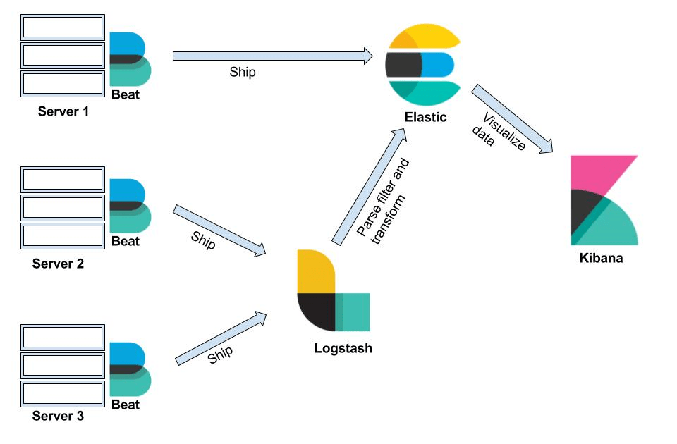

Log Management and Analysis in Kibana

In today's digital infrastructure, managing and analyzing logs effectively is crucial for maintaining application performance, security, and compliance. This blog post will explore how to utilize Kibana, a popular data visualization and exploration tool, to manage Kubernetes logs efficiently. We will focus on filtering logs to reduce noise, identifying key patterns, and creating insightful visualizations—all while maintaining the anonymity of the data sources.
Understanding the Log Data Landscape
In any Kubernetes environment, logs are generated by various components such as containers, applications, and services. These logs can quickly become voluminous, making it challenging to extract meaningful insights. To streamline this process, it's essential to apply filters and queries that target specific log entries, allowing us to focus on what's truly important.
Step-by-Step Guide to Log Filtering in Kibana
-
Setting the Time Range:
The first step in effective log management is to set an appropriate time range in Kibana. This helps narrow down the log data to a specific period, such as "Yesterday" or a custom time range that aligns with a particular incident or analysis period. -
Applying Filters to Reduce Noise:
In environments with multiple services, logs from proxies or internal services can generate significant noise. By applying filters, such as excluding logs fromistio-proxyor similar components, you can focus on the logs generated by your core applications. Here’s an example of how a query can be structured in Kibana:
kubernetes.namespace_name : "
This query filters logs to a specific Kubernetes namespace and excludes any logs from the istio-proxy container, reducing noise and allowing for a more targeted analysis.
- Identifying Key Patterns with Additional Filters:
To further refine the search, you can apply additional filters based on log content. For example, if you are interested in auditing logs, you can filter for specific logger names and message patterns:
structured.loggerName : "audit-logs" AND structured.message : "response"
This query targets logs generated by the audit system that include the keyword "response," helping you focus on audit-related events.
Creating Visualizations for Better Insights
Visualizations play a crucial role in communicating log data trends and patterns to stakeholders. Kibana offers various visualization types, such as line charts, bar charts, and area charts, which can be customized to highlight different aspects of log data.
-
Timeline Visualization for Log Analysis:
A timeline visualization can be particularly useful for understanding the flow of events over time. By setting the X-axis to a time-based histogram and the Y-axis to the count of logs, you can quickly identify spikes or patterns in log activity that may warrant further investigation. -
Pie Charts for Log Distribution:
Pie charts can help visualize the distribution of log entries across different components, namespaces, or error types. This is particularly useful for identifying which areas of your infrastructure are generating the most logs and may need optimization or further analysis.
Sharing and Reporting
Once you have created useful visualizations and dashboards, Kibana allows you to share these insights with your team or management. You can export dashboards as PDFs or PNGs, or share links directly, making it easy to distribute findings and facilitate data-driven decision-making.
Conclusion
Effective log management and analysis in Kibana require a combination of filtering techniques, targeted queries, and insightful visualizations. By applying these strategies, you can reduce noise, focus on the most relevant data, and provide actionable insights to your team and stakeholders. Whether you’re troubleshooting an issue, monitoring performance, or ensuring compliance, Kibana provides the tools you need to stay on top of your log data.
By keeping this report general and focusing on the methodology rather than specific data, we ensure that the information remains anonymous and applicable to a wide audience.
🔗 Connect with me:
-
💼 LinkedIn: https://www.linkedin.com/in/rifaterdemsahin/
-
🐦 Twitter: https://x.com/rifaterdemsahin
-
🎥 YouTube: https://www.youtube.com/@RifatErdemSahin
-
💻 GitHub: https://github.com/rifaterdemsahin
Imported from rifaterdemsahin.com · 2024